In the second half of the Birth Rights studio, each student developed a design proposal to address maternal health issues in Pittsburgh. Each proposal included the production of a “Design Proposal” zine, in addition to the project, which included further research on maternal health, as relevant to the individual's project.
My proposal focused on community care as a vehicle for continuous support and dignity in the pregnancy and birthing process.
Research – Identifying Issues
Dignity
racism, classicism, and sexism
The UN Committee on the Elimination of Racial Discrimination stated that the US was violating international human rights by not addressing Black maternal mortality and the "racial disparities in the field of sexual and reproductive health."
lack of agency and respect
Part of dignity is trusting pregnant people to make decisions, treating them with respect, enabling them to choose their support people, and ensuring they have access to pregnancy education in order to have the agency and information to make active and informed decisions.
Continuous Support
issues of access
This includes the disparities in cultural and geographic access, language, hours, education, and more. Limited access disproportionately affects people of color and people in low socioeconomic brackets. Lack of access to childcare results in pregnant people missing appointments, not having time to take care of themselves, and not getting support for second pregnancy.
fragmented care
Black mothers often experience fragmented care, meaning a continual switch up of doctors, nurses, and other medical professionals. This disruption in communication leads to symptoms going unrecognized and the patient's care not properly followed through. For example, preeclampsia, a very dangerous condition that can result in a miscarriage, can be spotted through abnormally high blood pressure. If a pregnant person does not have consistent care and a clear medical record, this can go unnoticed.
Research – Best Practices
Community-Based Health Care
These models prioritize access, connections, knowledge, and empowerment for pregnant people, while taking previous experiences and trauma into account. This encourages cultural literacy, which involves working within a community to talk about medical issues in a way that is culturally relevant and sensitive. This model of health care has been shown to lower the chances of a preterm birth and low birth weight.
Support Systems
Partner and family provide strong support and need emotional support in exchange. Support for partners is important, as a supported partner is able to better support the pregnant person.
Peers are a fantastic source of emotional support and a resource for collective knowledge. Parents that have peer-to-peer support often are more successful in the initiation and duration of breastfeeding. Social support can improve quality of life and reduce depressive symptoms, and can affect pregnancy outcomes.
Doulas offer one-way emotional support. Doula-assisted mothers are 4x less likely to have a low birth weight baby and 2x less likely to experience a birth complication. Doula care reduces the likelihood of medical interventions like C-sections, increases breastfeeding, and decreases postpartum depression.
Childcare + educational support Access to high-quality family planning information and services has been shown to significantly lower maternal mortality and reduce the likelihood of unintended pregnancy and abortion.
Self Advocacy + Agency
Self advocacy is having enough knowledge about one's pregnancy to be able to bring up valid concerns with a medical professional or ask for types of care that may not be mentioned to a pregnant parent. Communication and encouragement from a doula throughout pregnancy may increase a mother's self-efficacy regarding her ability to impact her own pregnancy outcomes. This type of knowledge can be gained through pregnancy classes, doula care, peer groups, and more.
Design Proposal
A community center for the birthing community, focusing on building continuous support systems
Exploring: How can the center encourage continuous support throughout pregnancy? How can the center allow visitors to choose their level of engagement and offer easy access to quiet spaces and sunlight? How can the center be welcoming to the public and feel personal to the pregnant person?
Amenities Mapping → Site Selection → Site Analysis → Proposal
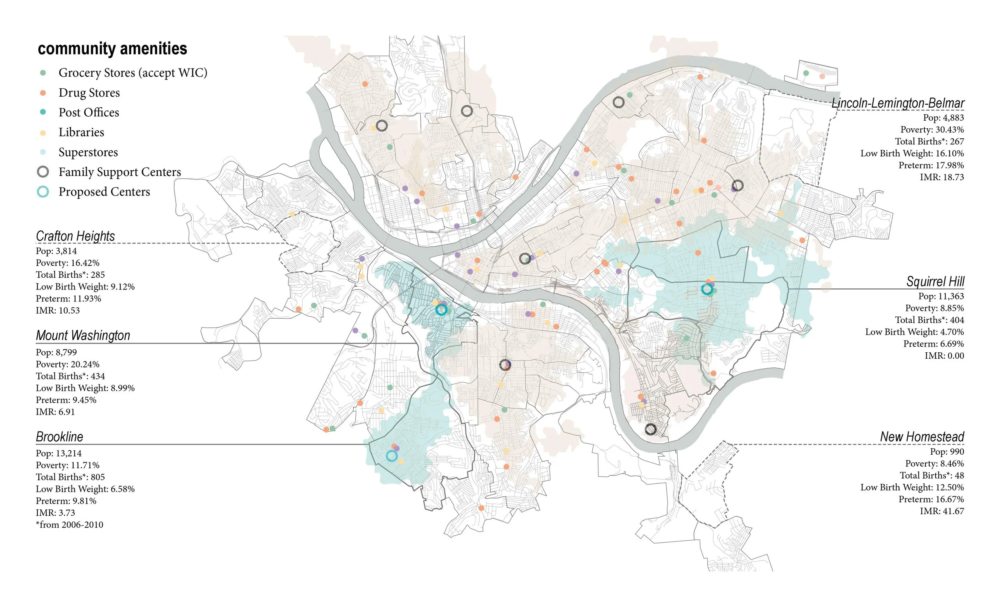
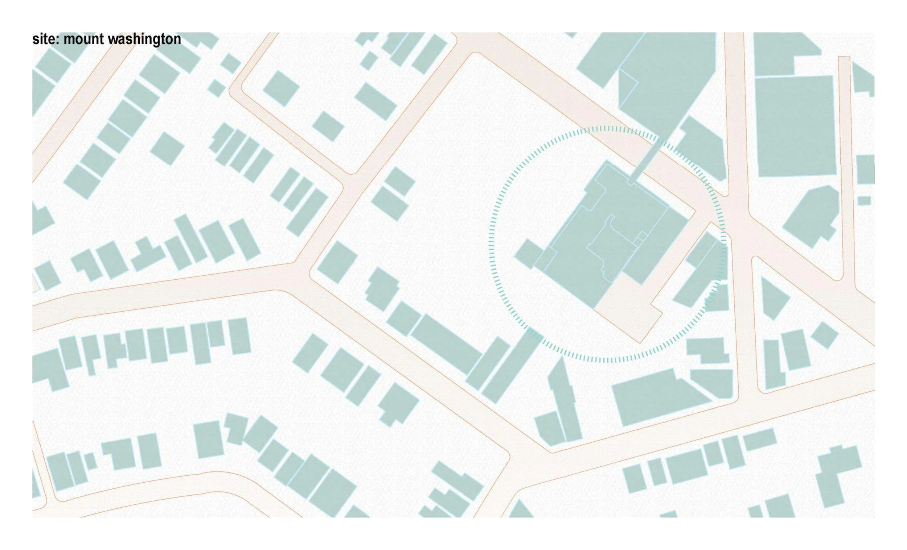
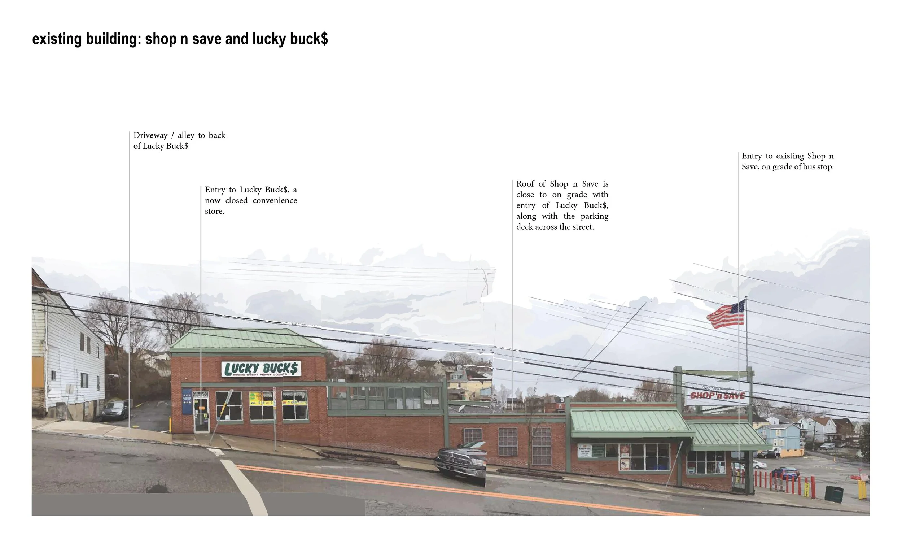
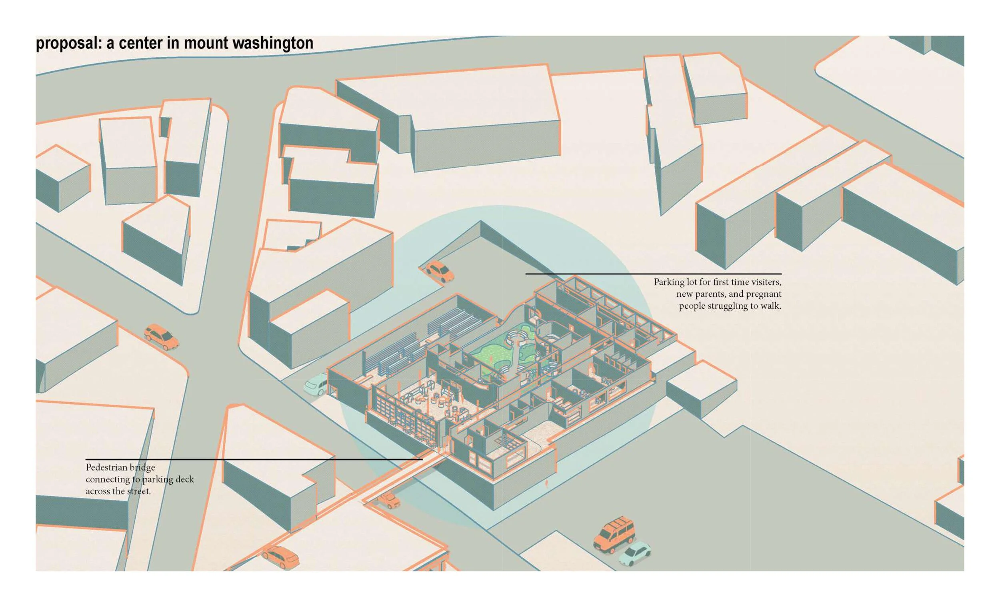
Proposed Program
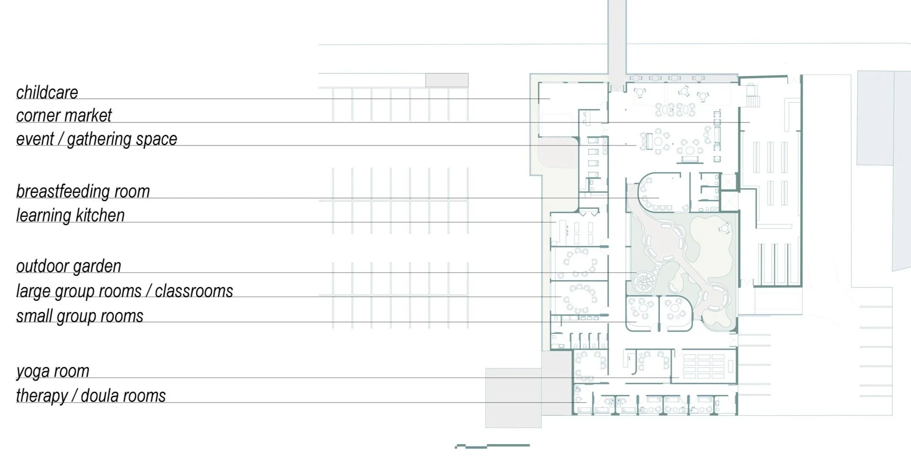
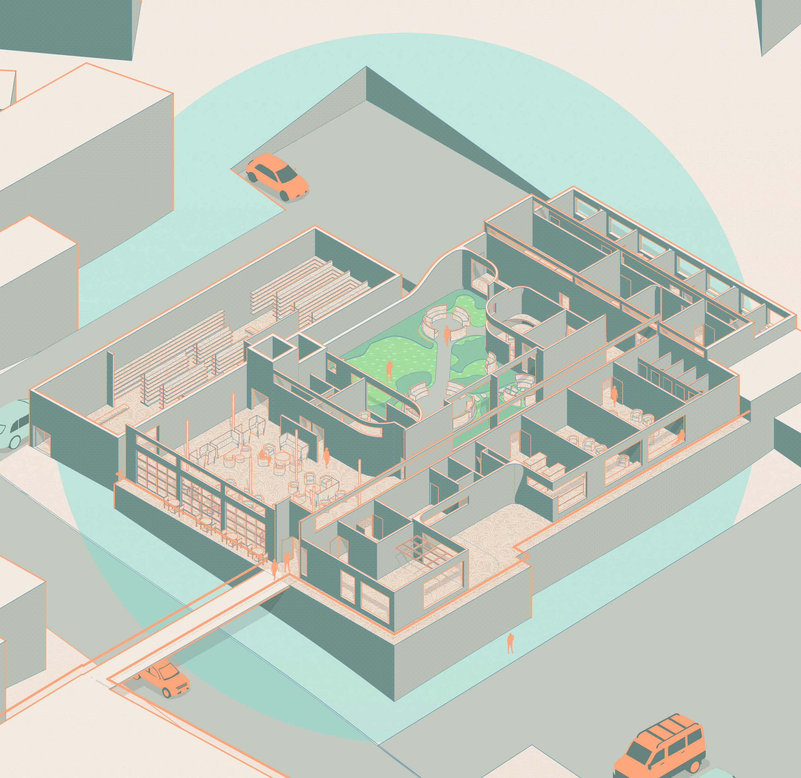
Event / Gathering Space
The event / gathering space is open as a gathering and working space throughout the week, for people waiting for classes and therapy, needing a few hours to work with childcare, or simply spending some time socializing or relaxing.
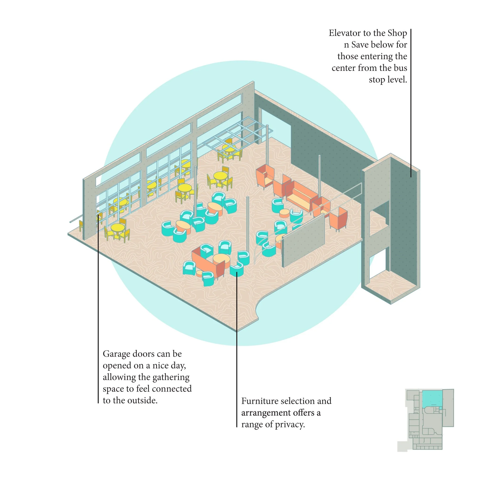
Corner Market
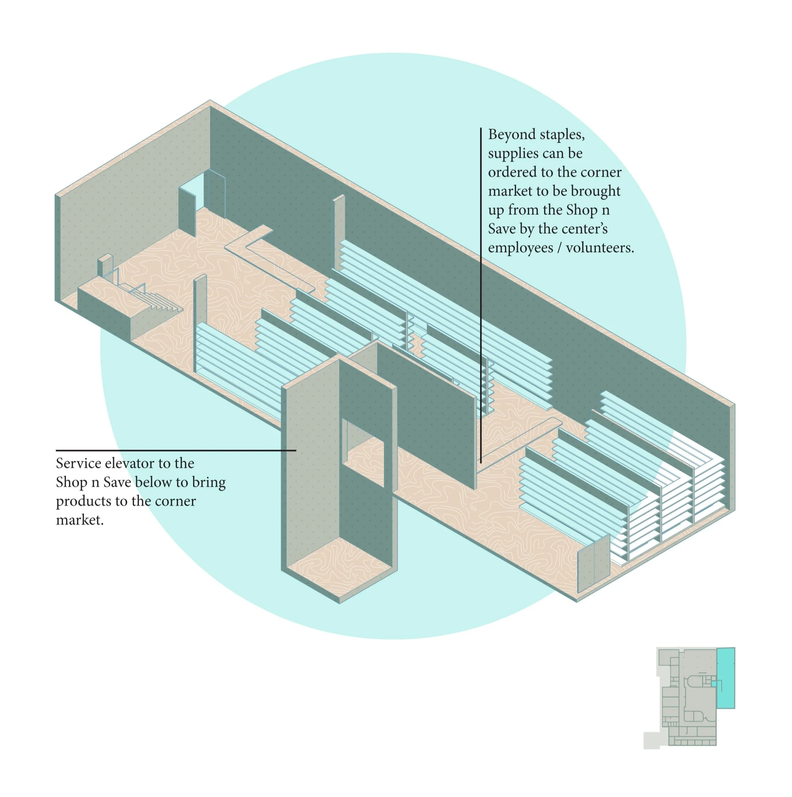
Childcare
The center offers childcare to the children of those visiting the center.
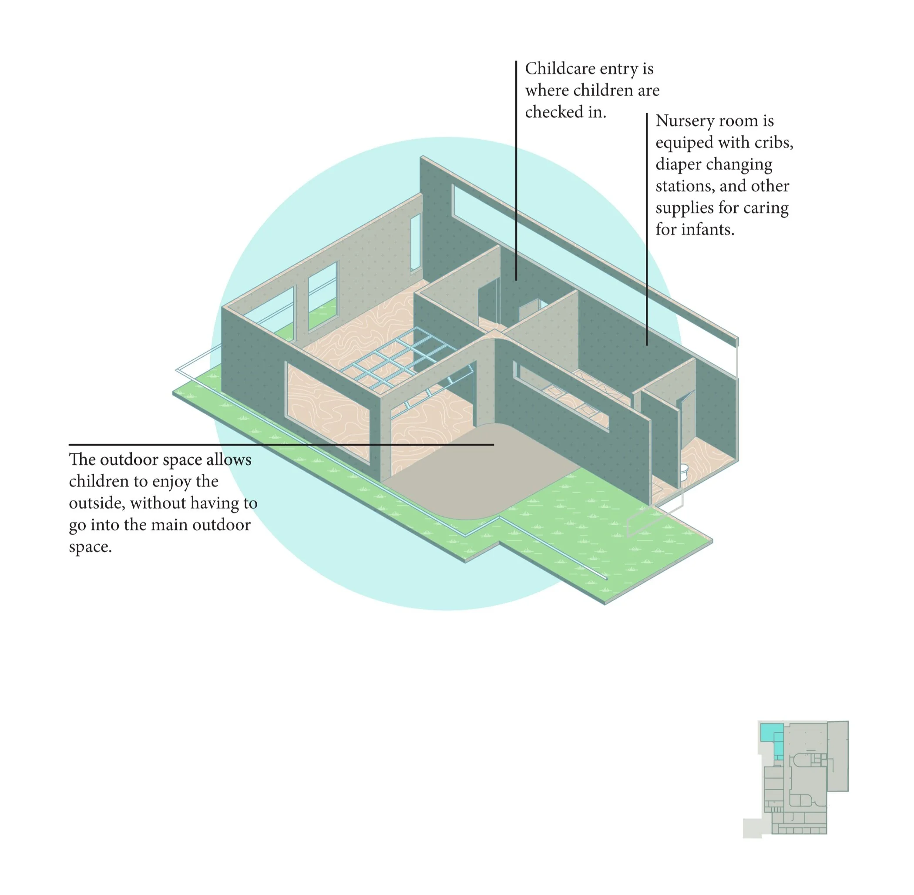
Breastfeeding Room
While breastfeeding anywhere in the center is welcomed, this room allows pregnant people that prefer privacy or a quiet environment to breastfeed.
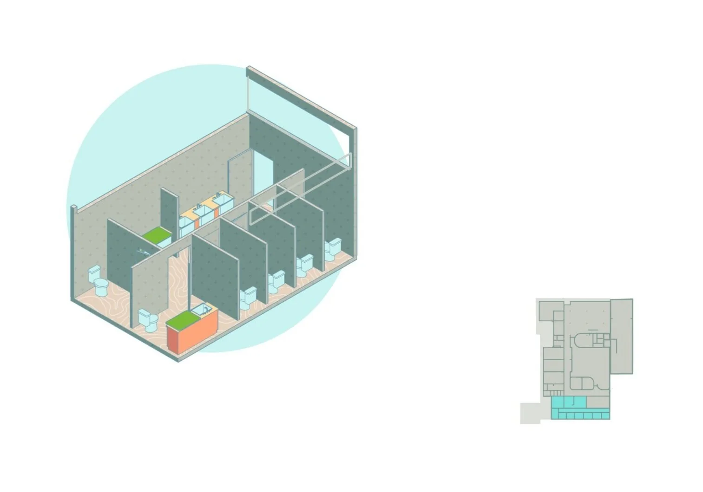
Learning Kitchen
Families can learn how to create healthy meals for themselves and their children in the learning kitchen.
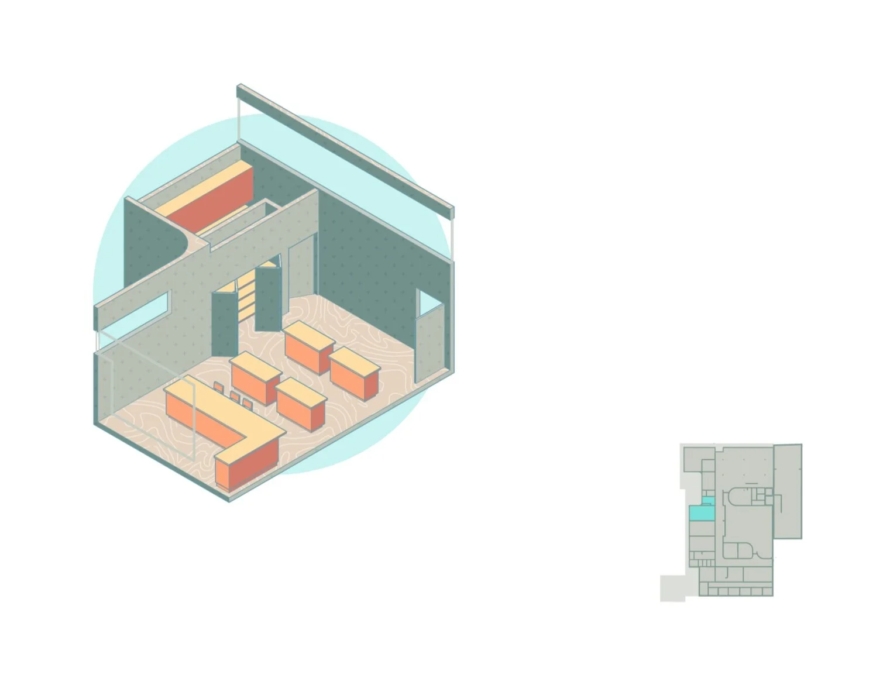
Yoga Room
Yoga can be beneficial for pregnant people, for both physical health and mental health.
Bathrooms
Bathrooms throughout the center are sized to be more comfortable for pregnant people, with larger doors and stalls than typical.
Outdoor Garden
The outdoor space provides a range of privacy for people visiting the center. Access to natural light and outdoor space is vital for mental health and is beneficial for birthing people.
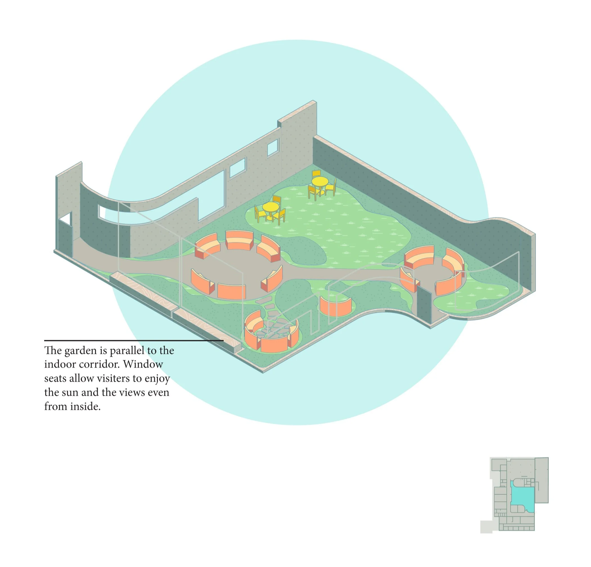
Small Group Rooms
Small group rooms are for groups of 5-8 people. These groups are more casual and private than large groups.
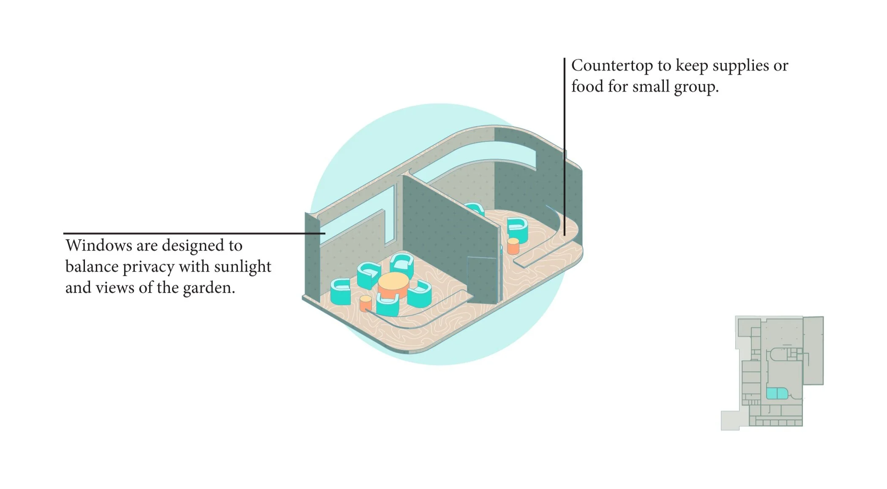